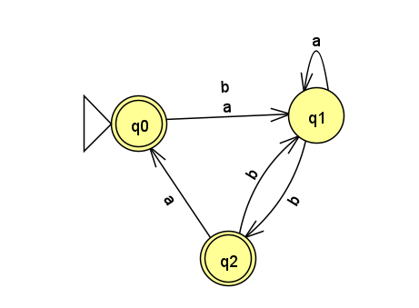

Homework 1
Last updated: Thu, 4 Nov 2021 14:27:45 -0400
Out: Mon Sept 13, 00:00 EST Due: Sun Sept 19, 23:59 EST
This assignment explores deterministic finite automata (DFAs).
Homework Problems
DFA Formal Description (4 points)
Alternate "Run" Function for DFAs (4 points)
Create a DFA (5 + 5 = 10 points)
More Fun with Induction (5 points)
README (2 point)
Total: 25 points
Submitting
Submit your solution to this assignment in Gradescope hw1. Please assign each page to the correct problem.
A submission must include a README containing the required information, in addition to the solution to the problems. Please make sure your solutions are legible.
1 DFA Formal Description
Recall that a DFA’s formal description has five components, e.g. M = (Q,\Sigma,\delta,q_0,F).
Come up with a formal description for the following DFA:

2 Alternate "Run" Function for DFAs
Assume we have some DFA M = (Q,\Sigma,\delta,q_0,F).
In class, we defined a "run" function for DFAs, \hat{\delta}:Q\times\Sigma^*\rightarrow Q:
\hat{\delta}(q,\epsilon) = q
\hat{\delta}(q,wx) = \delta(\hat{\delta}(q,w),x)
Above, in the recursive case, x\in\Sigma, w\in\Sigma^*, and the single step transition function \delta is applied to a recursive call to \hat{\delta}, and the last character in the input
Define an equivalent, alternate "run" function called \hat{\delta_f}, which applies the one-step \delta function to the first character in the input instead of the last one. (Don’t forget to include the base case.)
3 Create a DFA
Prove that the following language is regular:
\{w\mid w\textrm{ has exactly two }\texttt{1}\textrm{s}\}
Design a DFA that recognizes the language; and
give an inductive proof that the DFA does indeed recognize the language.
Assume the language contains strings from alphabet \Sigma=\{\texttt{0},\texttt{1}\}
4 More Fun with Induction
Prove that if some DFA M = (Q,\Sigma,\delta,q_0,F) has a state q such that \delta(q,a)=q, for all a\in\Sigma, then \hat{\delta}(q,w)=q for all possible strings w\in\Sigma^*. Use induction on the length of w.